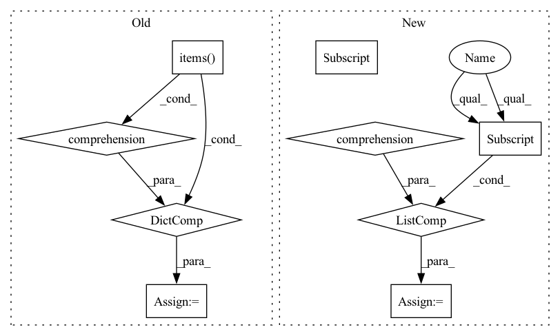

Pattern ID :33821
Before Change
truncation_strategy="longest_first",
)
tensors = {k: paddle.to_tensor(v) for (k, v) in features.items()}
with paddle.no_grad():
if self.use_en:
similarity_scores = self.transformer_model.matching_v2(**tensors).numpy()After Change
else:
datasets.append([query, doc.content])
outputs = self.transformer_model(datasets)
similarity_scores = [item["similarity"] for item in outputs]
for doc, rank_score in zip(documents, similarity_scores):
doc.rank_score = rank_score
doc.score = rank_scoreIn pattern: SUPERPATTERN
Frequency: 3
Non-data size: 9
Instances Fragment ID: 97048676
Project Name: paddlepaddle/paddlenlp
Commit Name: 35be940d8e29d002d830da63c5923f63b0ec4d5d
Time: 2023-03-06
Author: w5688414@gmail.com
File Name: pipelines/pipelines/nodes/ranker/ernie_ranker.py
M Class Name: ErnieRanker
N Class Name: ErnieRanker
M Method Name: predict(4)
N Method Name: predict(4)
M Parent Class: BaseRanker
N Parent Class: BaseRanker
M File Name: pipelines/pipelines/nodes/ranker/ernie_ranker.py
N File Name: pipelines/pipelines/nodes/ranker/ernie_ranker.py
M Start Line: 98
M End Line: 115
N Start Line: 97
N End Line: 104
Before Change
truncation_strategy="longest_first",
)
tensors = {k: paddle.to_tensor(v) for (k, v) in features.items()}
with paddle.no_grad():
if self.use_en:
similarity_scores = self.transformer_model.matching_v2(**tensors).numpy()After Change
else:
datasets.append([query, doc.content])
outputs = self.transformer_model(datasets)
similarity_scores = [item["similarity"] for item in outputs]
preds.extend(similarity_scores)
for doc, rank_score in zip(cur_docs, similarity_scores):
doc.rank_score = rank_score Fragment ID: 97048677
Project Name: paddlepaddle/paddlenlp
Commit Name: 35be940d8e29d002d830da63c5923f63b0ec4d5d
Time: 2023-03-06
Author: w5688414@gmail.com
File Name: pipelines/pipelines/nodes/ranker/ernie_ranker.py
M Class Name: ErnieRanker
N Class Name: ErnieRanker
M Method Name: predict_batch(5)
N Method Name: predict_batch(5)
M Parent Class: BaseRanker
N Parent Class: BaseRanker
M File Name: pipelines/pipelines/nodes/ranker/ernie_ranker.py
N File Name: pipelines/pipelines/nodes/ranker/ernie_ranker.py
M Start Line: 159
M End Line: 177
N Start Line: 150
N End Line: 159
Before Change
// Trim everything to the actual max length, to remove extra padding.
max_tokens = tf.reduce_max(
tf.reduce_sum(encoded_input["attention_mask"], axis=1))
encoded_input = {k: v[:, :max_tokens] for k, v in encoded_input.items()}
return encoded_input
def _make_dataset(self, inputs: Iterable[JsonDict]) -> tf.data.Dataset:
Make a tf.data.Dataset from inputs in LIT format.After Change
segments = [(ex[self.config.text_a_name], ex[self.config.text_b_name])
for ex in inputs]
else:
segments = [ex[self.config.text_a_name] for ex in inputs]
encoded_input = self.tokenizer.batch_encode_plus(
segments,
return_tensors="tf",
add_special_tokens=True, Fragment ID: 97048679
Project Name: pair-code/lit
Commit Name: fae47012f76e181c16aee5a75350ed24a53fa00c
Time: 2021-01-11
Author: iftenney@google.com
File Name: lit_nlp/examples/models/glue_models.py
M Class Name: GlueModel
N Class Name: GlueModel
M Method Name: _preprocess(2)
N Method Name: _preprocess(2)
M Parent Class: lit_model.Model
N Parent Class: lit_model.Model
M File Name: lit_nlp/examples/models/glue_models.py
N File Name: lit_nlp/examples/models/glue_models.py
M Start Line: 93
M End Line: 107
N Start Line: 88
N End Line: 93